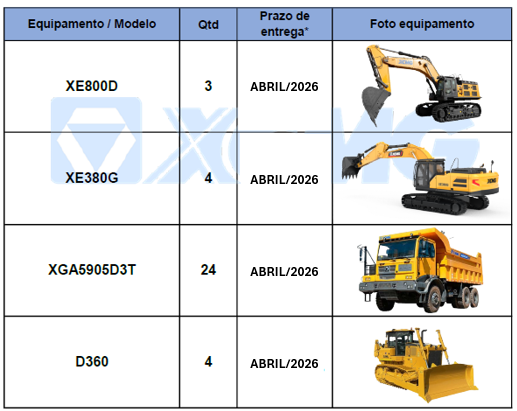
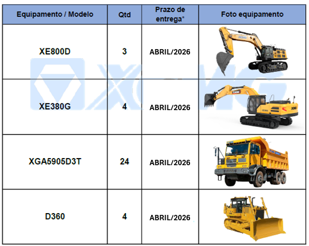

RESULTADOS FINANCEIROS
Zoomlion divulga fortes resultados no primeiro semestre de 2025, impulsionados pelo crescimento global e inovação tecnológica
Publicado em: 06 de Setembro de 2025
Os negócios internacionais da Zoomlion têm crescido fortemente, com a receita do primeiro semestre de 2025 atingindo 13,815 bilhões de yuans, um aumento de 15% em relação ao ano anterior e respondendo por 55,6% da receita total.
Saiba mais
CONCORRENTES
Volvo renova série de escavadeiras
Publicado em: 01 de Setembro de 2025
A Volvo CE introduziu no país sua nova série de escavadeiras, em 7 modelos: EC210, EC220, EC230, EC260, EC360, EC400 e EC500, para diversos setores, da mineração à infraestrutura pesada. O principal destaque é o salto na eficiência de combustível.
Saiba mais
EXPANSÃO
Com mineração em expansão, Grupo Inova assume distribuição da Epiroc em cinco estados
Publicado em: 02 de Setembro de 2025
O Grupo Inova tornou-se o distribuidor oficial da Epiroc em 5 estados: Minas Gerais, São Paulo, Rio de Janeiro, Espírito Santo e Bahia, regiões estratégicas para a atividade mineral do país. A previsão de investimentos em mineração entre 2025 e 2029 é de US$ 68,4 bilhões em novos projetos, 6,6% a mais do que o anterior.
Saiba mais
RECORDE
Quebra de recorde: maior pedido de exportação da China para equipamentos de mineração sustentável até o momento
Publicado em: 29 de Setembro de 2025
A XCMG assina acordo estratégico e entregará de 150 a 200 unidades de caminhões basculantes elétricos a bateria de 240 t para a Fortescue, uma das maiores produtoras de minério de ferro do mundo, marcando o maior pedido de exportação da China para máquinas de mineração sustentável.
Saiba mais
UNDERGROUND
Mineração subterrânea é estratégica para o futuro do setor no Brasil
Publicado em: 24 de Setembro de 2025
Nas últimas três décadas, os avanços em automação, controle remoto e ventilação reduziram drasticamente os riscos aos trabalhadores. A escassez de novas descobertas a céu aberto e a pressão por práticas sustentáveis consolidaram a mineração subterrânea como alternativa estratégica.
Saiba mais
INVESTIMENTOS
Crescimento de projetos alavancam investimentos no segmento
Publicado em: 17 de Setembro de 2025
O faturamento do setor de minerais críticos atingiu R$ 21,6 bilhões no primeiro semestre de 2025 (41,6% acima do mesmo período em 2024), impulsionando investimentos de US$ 68,4 bilhões até 2029, com foco em terras raras e desafios como desenvolvimento tecnológico, licenciamento e sustentabilidade.
Saiba mais
LICENCIAMENTO
Vale recebe licença de expansão do S11D em projeto de US$2,8 bilhões
Publicado em: 11 de Setembro de 2025
A Vale anunciou que recebeu do Instituto Brasileiro do Meio Ambiente e dos Recursos Naturais Renováveis (Ibama) a licença de operação para as atividades ligadas ao Projeto Serra Sul +20 Mtpa, no Sistema Norte, no Pará. O projeto tem início do comissionamento previsto para o segundo semestre de 2026.
Saiba mais
RESULTADOS
Subsidiária da Atlas Lithium tem bons resultados em projetos em GO e MG
Publicado em: 22 de Setembro de 2025
A Atlas Lithium Corporation informa que a subsidiária Atlas Critical Minerals Corporation (ACM) reportou excelentes resultados com sua estratégia diversificada de portfólio de terras raras, estabelecendo o portfólio de projetos de terras raras mais abrangente do Brasil.
Saiba mais
CRESCIMENTO REGIONAL
Mineração cresce mais de 400% no Piauí
Publicado em: 10 de Setembro de 2025
O setor teve aumento de mais de 4000% na produção do minério de ferro entre 2023 e 2024. Atualmente, o Piauí possui uma reserva estimada em mais de 1 bilhão de toneladas de minério de ferro, com produção anual de 1 milhão, o que coloca o estado como 6º maior exportador de minério de ferro do Brasil.
Saiba mais
MINA INTELIGENTE
Huawei e Vale estudam mina inteligente
Publicado em: 16 de Setembro de 2025
Huawei e Vale avaliam implantar um projeto de minas inteligentes, conectadas em redes 5G e até 5,5G, que prometem maior velocidade de dados e menor tempo de respostas, e que no Brasil ainda está em testes.
Saiba mais
IA
A nova tecnologia da mineração com Inteligência Artificial
Publicado em: 30 de Setembro de 2025
Máquinas já chegam com tecnologia de informação embarcada, transmitindo em tempo real indicadores de desempenho e segurança. Mineradoras reportam ganhos de dois dígitos em eficiência, redução significativa de custos e maior confiança em segurança e sustentabilidade.
Saiba mais
DESAFIOS
Geopolítica, tecnologias e transição energética são os desafios da mineração
Publicado em: 22 de Setembro de 2025
A corrida global por minerais críticos, impulsionada pela transição energética e pela corrida pela supremacia tecnológica, está redefinindo as cadeias de suprimentos e, com isso, a dinâmica no setor, além das incertezas geopolíticas e necessidade de redefinir a produtividade e a excelência operacional.
Saiba mais
TERRAS RARAS
As terras raras e a reorganização silenciosa das cadeias globais
Publicado em: 27 de Setembro de 2025
A China concentra cerca de 60% da produção mundial de minério bruto e, mais decisivamente, 90% da capacidade global de refino químico. Enquanto EUA, Europa e Japão se movimentam, o Brasil permanece numa posição de potencial adormecido.
Saiba mais
TRANSIÇÃO ENERGÉTICA
Pesquisa aponta 'colonialismo' com metais para transição energética
Publicado em: 29 de Setembro de 2025
A transição energética está sendo capturada por empresas e países super ricos, reproduzindo padrões coloniais que aprofundam desigualdades e alimentam violações de direitos humanos. Sul Global detém 70% de reservas minerais, mas 46% do investimento está no Norte e 29% na China.
Saiba mais
PARCERIAS
Brasil e Canadá avançam parcerias em mineração e energia
Publicado em: 11 de Setembro de 2025
O Memorando de Entendimento entre a pasta e o Natural Resources Canada pretende estabelecer um marco de cooperação bilateral em áreas estratégicas como mineração, energia, combustíveis renováveis e desenvolvimento social de recursos naturais.
Saiba mais
DESENVOLVIMENTO
Rio Tinto perto do primeiro embarque em Simandou
Publicado em: 10 de Setembro de 2025
Rio Tinto se aproxima do primeiro embarque de minério de ferro em Simandou, na Guiné, com foco no desenvolvimento local e na possibilidade de investimentos em refinarias e pelotização, visando agregar valor à produção.
Saiba mais
EVENTO
EXPOSIBRAM 2025 marca retorno a Salvador, com foco na nova fronteira mineral do Nordeste
Publicado em: 18 de Setembro de 2025
O evento reforçará o protagonismo da Bahia e do Nordeste - onde há uma concentração relevante de minerais estratégicos como cobre, lítio, níquel, vanádio e terras raras -, destacando seu potencial crescente para o desenvolvimento de projetos voltados à mineração responsável e à transição energética.
Saiba mais
AGENDA
Eventos e Feiras
21-23 Out
FENASAN 2025
São Paulo, SP (saneamento e meio ambiente)


 
